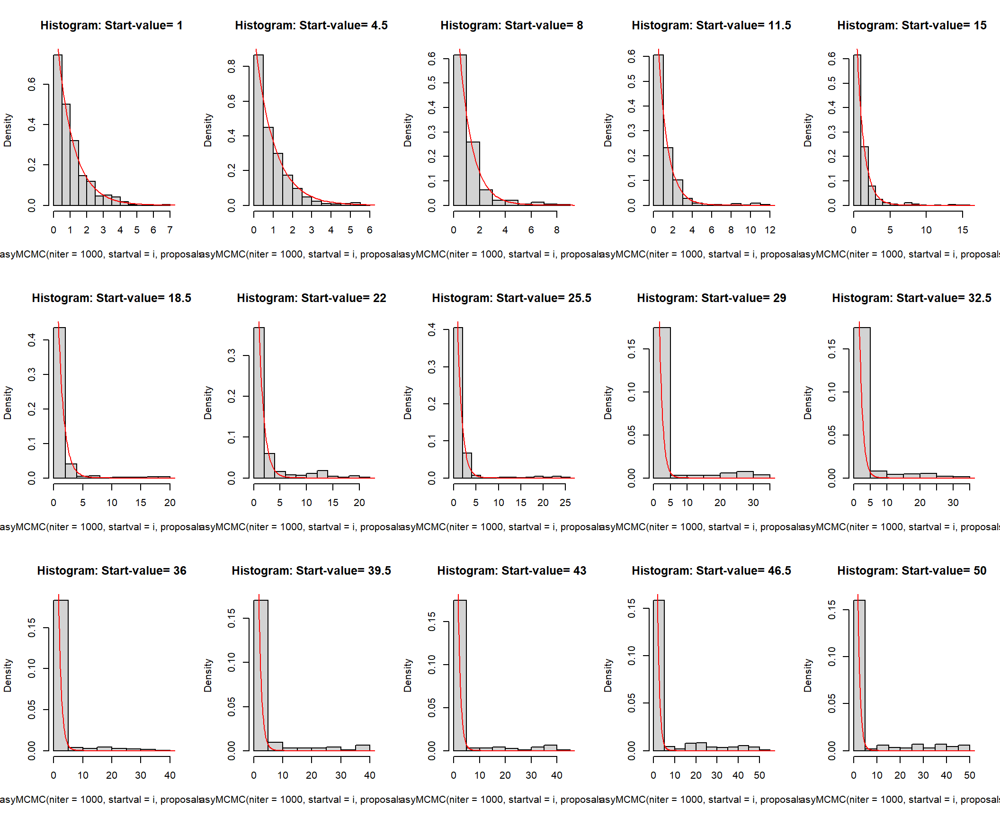
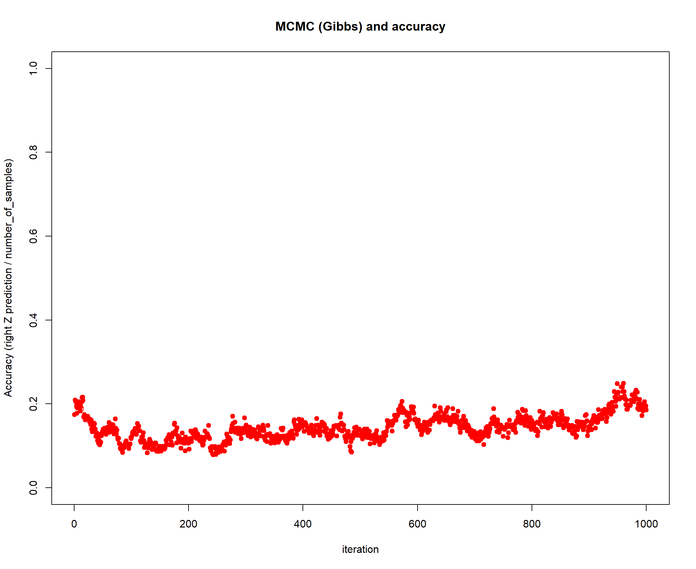

HW4_MCMC
Kiseok Lee
2022-02-04
Last updated: 2022-02-07
Checks: 7 0
Knit directory: fiveMinuteStats/analysis/
This reproducible R Markdown analysis was created with workflowr (version 1.6.2). The Checks tab describes the reproducibility checks that were applied when the results were created. The Past versions tab lists the development history.
Great! Since the R Markdown file has been committed to the Git repository, you know the exact version of the code that produced these results.
Great job! The global environment was empty. Objects defined in the global environment can affect the analysis in your R Markdown file in unknown ways. For reproduciblity it’s best to always run the code in an empty environment.
The command set.seed(12345) was run prior to running the code in the R Markdown file. Setting a seed ensures that any results that rely on randomness, e.g. subsampling or permutations, are reproducible.
Great job! Recording the operating system, R version, and package versions is critical for reproducibility.
Nice! There were no cached chunks for this analysis, so you can be confident that you successfully produced the results during this run.
Great job! Using relative paths to the files within your workflowr project makes it easier to run your code on other machines.
Great! You are using Git for version control. Tracking code development and connecting the code version to the results is critical for reproducibility.
The results in this page were generated with repository version 641c8e3. See the Past versions tab to see a history of the changes made to the R Markdown and HTML files.
Note that you need to be careful to ensure that all relevant files for the analysis have been committed to Git prior to generating the results (you can use wflow_publish or wflow_git_commit). workflowr only checks the R Markdown file, but you know if there are other scripts or data files that it depends on. Below is the status of the Git repository when the results were generated:
Ignored files:
Ignored: .Rhistory
Ignored: .Rproj.user/
Untracked files:
Untracked: texput.log
Note that any generated files, e.g. HTML, png, CSS, etc., are not included in this status report because it is ok for generated content to have uncommitted changes.
These are the previous versions of the repository in which changes were made to the R Markdown (analysis/HW4_MCMC.Rmd) and HTML (docs/HW4_MCMC.html) files. If you’ve configured a remote Git repository (see ?wflow_git_remote), click on the hyperlinks in the table below to view the files as they were in that past version.
| File | Version | Author | Date | Message |
|---|---|---|---|---|
| Rmd | 641c8e3 | Kiseok Lee | 2022-02-07 | wflow_publish(“analysis/HW4_MCMC.Rmd”) |
HW4 MCMC: Markov chain monte carlo methods: Metropolis Hastings & Gibbs algorithm
Name: Kiseok Lee
Date: 2/4/22
Class: HGEN 486 Computational Biology
A. Metropolis-Hastings Algorithm
https://stephens999.github.io/fiveMinuteStats/MH-examples1.html
A-1) Exercise from Example 1: sampling from an exponential distribution using MCMC
First, let’s set up the Metropolis-Hastings Algorithm first
# Any MCMC scheme aims to produce
# (dependent) samples from a ``target'
# distribution. In this case we are
# going to use the exponential
# distribution with mean 1 as our
# target distribution. So we start by
# defining our target density:
target = function(x) {
if (x < 0) {
return(0)
} else {
return(exp(-x))
}
}
# Having defined the function, we can
# now use it to compute a couple of
# values (just to illustrate the idea
# of a function):
target(1)[1] 0.3678794target(-1)[1] 0# Next, we will program a
# Metropolis--Hastings scheme to sample
# from a distribution proportional to
# the target
x = rep(0, 1000)
x[1] = 3 #this is just a starting value, which I've set arbitrarily to 3
for (i in 2:1000) {
currentx = x[i - 1]
proposedx = currentx + rnorm(1, mean = 0,
sd = 1)
A = target(proposedx)/target(currentx)
if (runif(1) < A) {
x[i] = proposedx # accept move with probabily min(1,A)
} else {
x[i] = currentx # otherwise 'reject' move, and stay where we are
}
}
plot(x)hist(x)# We can wrap this up in a function to
# make things a bit neater, and make it
# easy to try changing starting values
# and proposal distributions
easyMCMC = function(niter, startval, proposalsd) {
x = rep(0, niter)
x[1] = startval
for (i in 2:niter) {
currentx = x[i - 1]
proposedx = rnorm(1, mean = currentx,
sd = proposalsd)
A = target(proposedx)/target(currentx)
if (runif(1) < A) {
x[i] = proposedx # accept move with probabily min(1,A)
} else {
x[i] = currentx # otherwise 'reject' move, and stay where we are
}
}
return(x)
}
z1 = easyMCMC(1000, 3, 1)
plot(dexp(z1))plot(dexp(z1, log = T))dev.off()null device
1 Exercise A-1-a) how do different starting values affect the MCMC scheme?
As the starting value gets larger from 1, it takes more iterations to arrive (bigger burn-in) at exponential distribution. Therefore, if I plot the histogram to see if the distribution is similar to exponential distribution, the MH sampling starting from smaller values (>1) are more closer to exponential distribution.
# Plot realizations
par(mfrow = c(3, 5))
for (i in seq(1, 50, length.out = 15)) {
plot(easyMCMC(niter = 1000, startval = i,
proposalsd = 1), xlab = "Iterations",
ylab = "Realizations", main = paste0("Start-value= ",
i))
}# Histogram
par(mfrow = c(3, 5))
for (i in seq(1, 50, length.out = 15)) {
hist(easyMCMC(niter = 1000, startval = i,
proposalsd = 1), probability = T,
main = paste0("Histogram: Start-value= ",
i))
xx = seq(0, 100, length = 1000)
lines(xx, target(xx), col = "red")
}
To prove that my hypothesis is right, I can only plot the histogram with the realizations after the burn-in (only plotting x after 200 iterations). In the plot below, indeed the histogram is more closer to exponential distribution.
# Histogram
par(mfrow = c(3, 5))
for (i in seq(1, 50, length.out = 15)) {
hist(easyMCMC(niter = 1000, startval = i,
proposalsd = 1)[200:1000], probability = T,
main = paste0("Histogram: Start-value= ",
i))
xx = seq(0, 100, length = 1000)
lines(xx, target(xx), col = "red")
}par(mfrow = c(1, 1))Exercise A-1-b) what is the effect of having a bigger/smaller proposal standard deviation?
As the proposal standard deviation gets bigger from 0 to 1, the MH simulations that have values closer to 1 performs better. (need less burn-in to reach exponential distribution). Extremely small standard deviations will make the realizations move too slowly.
# Plot realizations
par(mfrow = c(3, 5))
# (1) Let's start with sd below 1
for (i in seq(0, 1, length.out = 15)) {
plot(easyMCMC(niter = 1000, startval = 1,
proposalsd = i), xlab = "Iterations",
ylab = "Realizations", main = paste0("Proposal_sd= ",
i))
}par(mfrow = c(3, 5))
# Histogram
for (i in seq(0, 1, length.out = 15)) {
hist(easyMCMC(niter = 1000, startval = 1,
proposalsd = i), probability = T,
main = paste0("Proposal_sd= ", i))
xx = seq(0, 100, length = 1000)
lines(xx, target(xx), col = "red")
}As the proposal standard deviation gets bigger from 1 to 50, the MH simulations performs worse. In many iterations, the proposal is rejected, creating a streak of same realizations throughout some periods of iterations. This is because bigger proposed value is more likely to get rejected.
# Plot realizations
par(mfrow = c(3, 5))
# (1) Let's start with sd below 1
for (i in seq(1, 50, length.out = 15)) {
plot(easyMCMC(niter = 1000, startval = 1,
proposalsd = i), xlab = "Iterations",
ylab = "Realizations", main = paste0("Proposal_sd= ",
i))
}par(mfrow = c(3, 5))
# Histogram
for (i in seq(1, 50, length.out = 15)) {
hist(easyMCMC(niter = 1000, startval = 1,
proposalsd = i), probability = T,
main = paste0("Proposal_sd= ", i))
xx = seq(0, 100, length = 1000)
lines(xx, target(xx), col = "red")
}par(mfrow = c(1, 1))Exercise A-1-c) try changing the target function to the following
target = function(x) {
return((x > 0 & x < 1) + (x > 2 & x <
3))
}
easyMCMC = function(niter, startval, proposalsd) {
x = rep(0, niter)
x[1] = startval
for (i in 2:niter) {
currentx = x[i - 1]
proposedx = rnorm(1, mean = currentx,
sd = proposalsd)
A = target(proposedx)/target(currentx)
if (runif(1) < A) {
x[i] = proposedx # accept move with probabily min(1,A)
} else {
x[i] = currentx # otherwise 'reject' move, and stay where we are
}
}
return(x)
}
# see distribution
xx = seq(0, 5, length = 100)
plot(xx, target(xx))## proposal sd = 1
plot(easyMCMC(niter = 1000, startval = 0.5,
proposalsd = 1), xlab = "Iterations",
ylab = "Realizations", main = paste0("Different target function"))
hist(easyMCMC(niter = 1000, startval = 0.5,
proposalsd = 1), probability = T, main = paste0("Histogram for Different target function"))
lines(xx, target(xx)/2, col = "red")
## proposal sd = 0.1
plot(easyMCMC(niter = 1000, startval = 0.5,
proposalsd = 0.1), xlab = "Iterations",
ylab = "Realizations", main = paste0("Different target function"))hist(easyMCMC(niter = 1000, startval = 0.5,
proposalsd = 0.1), xlim = c(0, 4), probability = T,
main = paste0("Histogram for Different target function"))
lines(xx, target(xx)/2, col = "red")When proposal sd is too small (as in 0.1 case), the realization x cannot jump from 1 region to another. Therefore, the optimal sd hyperparameter is contingent upon the sampled distribution.
Example A-2) Estimating an allele frequency
A standard assumption when modelling genotypes of bi-allelic loci (e.g. loci with alleles \(A\) and \(a\)) is that the population is “randomly mating”. From this assumption it follows that the population will be in “Hardy Weinberg Equilibrium” (HWE), which means that if \(p\) is the frequency of the allele \(A\) then the genotypes \(AA\), \(Aa\) and \(aa\) will have frequencies \(p^2, 2p(1-p)\) and \((1-p)^2\) respectively.
A simple prior for \(p\) is to assume it is uniform on \([0,1]\). Suppose that we sample \(n\) individuals, and observe \(n_{AA}\) with genotype \(AA\), \(n_{Aa}\) with genotype \(Aa\) and \(n_{aa}\) with genotype \(aa\).
The following R code gives a short MCMC routine to sample from the posterior distribution of \(p\). Try to go through the code to see how it works.
Import code first.
prior = function(p) {
if ((p < 0) || (p > 1)) {
# || here means 'or'
return(0)
} else {
return(1)
}
}
likelihood = function(p, nAA, nAa, naa) {
return(p^(2 * nAA) * (2 * p * (1 - p))^nAa *
(1 - p)^(2 * naa))
}
psampler = function(nAA, nAa, naa, niter,
pstartval, pproposalsd) {
p = rep(0, niter)
p[1] = pstartval
for (i in 2:niter) {
currentp = p[i - 1]
newp = currentp + rnorm(1, 0, pproposalsd)
A = prior(newp) * likelihood(newp,
nAA, nAa, naa)/(prior(currentp) *
likelihood(currentp, nAA, nAa,
naa))
if (runif(1) < A) {
p[i] = newp # accept move with probabily min(1,A)
} else {
p[i] = currentp # otherwise 'reject' move, and stay where we are
}
}
return(p)
}Running this sample for \(n_{AA}\) = 50, \(n_{Aa}\) = 21, \(n_{aa}\)=29.
z = psampler(nAA = 50, nAa = 21, naa = 29,
niter = 10000, pstartval = 0.5, pproposalsd = 0.01)
x = seq(0, 1, length = 1000)
hist(z, prob = T)
lines(x, dbeta(x, 122, 80)) # overlays beta density on histogram (Theoretical)# You might also like to discard the
# first 5000 z's as 'burnin'. Here's
# one way in R to select only the last
# 5000 z's
hist(z[5001:10000], prob = T)
lines(x, dbeta(x, 122, 80)) # overlays beta density on histogram (Theoretical)Investigate how the starting point and proposal standard deviation affect the convergence of the algorithm.
- Starting point As the starting value gets larger from 0 to 0.5, it takes more iterations to arrive (bigger burn-in) at exponential distribution. Therefore, if I plot the histogram to see if the distribution is similar to beta distribution, the MCMC sampling starting from values closer to 0.5 are more closer to exponential distribution.
# Plot realizations
par(mfrow = c(2, 4))
for (i in seq(0.01, 0.5, length.out = 8)) {
plot(psampler(nAA = 50, nAa = 21, naa = 29,
niter = 10000, pstartval = i, pproposalsd = 0.01),
xlab = "Iterations", ylab = "Realizations",
main = paste0("Start-value= ", i))
}# Histogram
par(mfrow = c(2, 4))
for (i in seq(0.01, 0.5, length.out = 8)) {
hist(psampler(nAA = 50, nAa = 21, naa = 29,
niter = 10000, pstartval = i, pproposalsd = 0.01),
xlab = "p", probability = T, main = paste0("Histogram: Start-value= ",
i))
x = seq(0, 1, length = 1000)
lines(x, dbeta(x, 122, 80), col = "red")
}To prove that my hypothesis is right, I can only plot the histogram with the realizations after the burn-in (only plotting x after 1000 iterations). In the plot below, indeed the histogram is more closer to exponential distribution.
# Histogram
par(mfrow = c(2, 4))
for (i in seq(0.01, 0.5, length.out = 8)) {
hist(psampler(nAA = 50, nAa = 21, naa = 29,
niter = 10000, pstartval = i, pproposalsd = 0.01)[1000:10000],
xlab = "p", probability = T, main = paste0("Histogram: Start-value= ",
i))
x = seq(0, 1, length = 1000)
lines(x, dbeta(x, 122, 80), col = "red")
}par(mfrow = c(1, 1))- Standard deviation As the proposal standard deviation gets bigger from 0 to 0.1, all the MCMC simulations except for sd=0 works. Therefore, sd as small as 0.01 still works nicely. However, when you have a sd bigger than 0.1, the rejection rate becomes higher and deviates a little from the beta distribution. Strangely, sd with 0.07 performs similarly to sd = 0.01 case.
# Plot realizations
par(mfrow = c(2, 4))
for (i in seq(0, 0.1, length.out = 8)) {
plot(psampler(nAA = 50, nAa = 21, naa = 29,
niter = 10000, pstartval = 0.3, pproposalsd = i),
xlab = "Iterations", ylab = "Realizations",
main = paste0("Proposed_std= ", i))
}# Histogram
par(mfrow = c(2, 4))
for (i in seq(0, 0.1, length.out = 8)) {
hist(psampler(nAA = 50, nAa = 21, naa = 29,
niter = 10000, pstartval = 0.3, pproposalsd = i),
xlab = "p", probability = T, main = paste0("Histogram: Proposed_std= ",
i))
x = seq(0, 1, length = 1000)
lines(x, dbeta(x, 122, 80), col = "red")
}par(mfrow = c(1, 1))Example A-3) Estimating an allele frequency and inbreeding coefficient
A slightly more complex alternative than HWE is to assume that there is a tendency for people to mate with others who are slightly more closely-related than “random” (as might happen in a geographically-structured population, for example). This will result in an excess of homozygotes compared with HWE. A simple way to capture this is to introduce an extra parameter, the “inbreeding coefficient” \(f\), and assume that the genotypes \(AA\), \(Aa\) and \(aa\) have frequencies \(fp + (1-f)p*p, (1-f) 2p(1-p)\), and \(f(1-p) + (1-f)(1-p)(1-p)\).
In most cases it would be natural to treat \(f\) as a feature of the population, and therefore assume \(f\) is constant across loci. For simplicity we will consider just a single locus.
Note that both \(f\) and \(p\) are constrained to lie between 0 and 1 (inclusive). A simple prior for each of these two parameters is to assume that they are independent, uniform on \([0,1]\). Suppose that we sample \(n\) individuals, and observe \(n_{AA}\) with genotype \(AA\), \(n_{Aa}\) with genotype \(Aa\) and \(n_{aa}\) with genotype \(aa\).
pf_likelihood = function(p, f, nAA, nAa,
naa) {
return(prod((f * p + (1 - f) * p * p)^nAA,
((1 - f) * 2 * p * (1 - p))^nAa,
(f * (1 - p) + (1 - f) * (1 - p) *
(1 - p))^naa))
}
fpsampler = function(nAA, nAa, naa, niter,
fstartval, pstartval, fproposalsd, pproposalsd) {
f = rep(0, niter)
p = rep(0, niter)
f[1] = fstartval
p[1] = pstartval
for (i in 2:niter) {
currentf = f[i - 1]
currentp = p[i - 1]
newf = currentf + rnorm(1, 0, fproposalsd)
newp = currentp + rnorm(1, 0, pproposalsd)
# Acceptance probability
A = prior(newp) * pf_likelihood(p = newp,
f = newf, nAA, nAa, naa)/(prior(currentp) *
pf_likelihood(p = currentp, f = currentf,
nAA, nAa, naa))
if (runif(1) < A) {
p[i] = newp # accept move with probabily min(1,A)
} else {
p[i] = currentp # otherwise 'reject' move, and stay where we are
}
}
return(list(f = f, p = p)) # return a 'list' with two elements named f and p
}
fp_list = fpsampler(nAA = 50, nAa = 21, naa = 29,
niter = 10000, fstartval = 0.3, pstartval = 0.3,
fproposalsd = 0.001, pproposalsd = 0.01)
# f
plot(fp_list$f, xlab = "Iterations", ylab = "f Realizations",
main = paste0("f sampling"))# p
plot(fp_list$p, xlab = "Iterations", ylab = "p Realizations",
main = paste0("p sampling"))# posterior mean
mean(fp_list$f)[1] 3e-05mean(fp_list$p)[1] 0.600949# 90% credible intervals
lower = qbeta(0.05, 122, 80)
lower[1] 0.5468983upper = qbeta(0.95, 122, 80)
upper[1] 0.6598491posterior mean of f is almost 0. posterior mean of p is about 0.6. 90% posterior credible interval is [0.547, 0.66].
B. Gibbs sampling for genetic mixtures
Read: http://stephenslab.uchicago.edu/assets/papers/Pritchard2000a.pdf.\ Consider the following simplified version of the model from Pritchard et al (2000).
Suppose you have a number of samples from a “population” that contains an unknown fraction of forest or savannah elephants. (Assume elephants are haploid for simplicity.) Introduce the following notation
First, let’s learn from the example code
from https://stephens999.github.io/fiveMinuteStats/gibbs_structure_simple.html
set.seed(33)
# generate from mixture of normals
#' @param n number of samples
#' @param P a 2 by R matrix of allele frequencies
r_simplemix = function(n, P) {
R = ncol(P)
z = sample(1:2, prob = c(0.5, 0.5), size = n,
replace = TRUE) #simulate z as 1 or 2
x = matrix(nrow = n, ncol = R)
for (i in 1:n) {
x[i, ] = rbinom(R, rep(1, R), P[z[i],
])
}
return(list(x = x, z = z))
}
P = rbind(c(0.5, 0.5, 0.5, 0.5, 0.5, 0.5),
c(0.001, 0.999, 0.001, 0.999, 0.001,
0.999))
sim = r_simplemix(n = 50, P)
x = sim$x
# Gibbs sampler code
#' @param x an R vector of data
#' @param P a K by R matrix of allele frequencies
#' @return the log-likelihood for each of the K populations
log_pr_x_given_P = function(x, P) {
tP = t(P) #transpose P so tP is R by K
return(colSums(x * log(tP) + (1 - x) *
log(1 - tP)))
}
normalize = function(x) {
return(x/sum(x))
} #used in sample_z below
#' @param x an n by R matrix of data
#' @param P a K by R matrix of allele frequencies
#' @return an n vector of group memberships
sample_z = function(x, P) {
K = nrow(P)
loglik_matrix = apply(x, 1, log_pr_x_given_P,
P = P)
lik_matrix = exp(loglik_matrix)
p.z.given.x = apply(lik_matrix, 2, normalize) # normalize columns
z = rep(0, nrow(x))
for (i in 1:length(z)) {
z[i] = sample(1:K, size = 1, prob = p.z.given.x[,
i], replace = TRUE)
}
return(z)
}
#' @param x an n by R matrix of data
#' @param z an n vector of cluster allocations
#' @return a 2 by R matrix of allele frequencies
sample_P = function(x, z) {
R = ncol(x)
P = matrix(ncol = R, nrow = 2)
for (i in 1:2) {
sample_size = sum(z == i)
if (sample_size == 0) {
number_of_ones = rep(0, R)
} else {
number_of_ones = colSums(x[z ==
i, ])
}
P[i, ] = rbeta(R, 1 + number_of_ones,
1 + sample_size - number_of_ones)
}
return(P)
}
gibbs = function(x, niter = 100) {
z = sample(1:2, nrow(x), replace = TRUE)
res = list(z = matrix(nrow = niter, ncol = nrow(x)))
res$z[1, ] = z
for (i in 2:niter) {
P = sample_P(x, z)
z = sample_z(x, P)
res$z[i, ] = z
}
return(res)
}
# Try the Gibbs sampler on the data
# simulated above.
res = gibbs(x, 100)
table(res$z[1, ], sim$z)
1 2
1 14 11
2 10 15table(res$z[100, ], sim$z)
1 2
1 4 26
2 20 0image(t(res$z))Another example code
from https://stephens999.github.io/fiveMinuteStats/gibbs2.html
# To illustrate, let’s simulate data
# from this model:
set.seed(33)
# generate from mixture of normals
#' @param n number of samples
#' @param pi mixture proportions
#' @param mu mixture means
#' @param s mixture standard deviations
rmix = function(n, pi, mu, s) {
z = sample(1:length(pi), prob = pi, size = n,
replace = TRUE)
x = rnorm(n, mu[z], s[z])
return(x)
}
x = rmix(n = 1000, pi = c(0.5, 0.5), mu = c(-2,
2), s = c(1, 1))
hist(x)#' @param x an n vector of data
#' @param pi a k vector
#' @param mu a k vector
mu = rnorm(k, 0, 10)Error in rnorm(k, 0, 10): object 'k' not foundlength(mu)Error in eval(expr, envir, enclos): object 'mu' not foundpi[1] 3.141593dmat = outer(mu, x, "-")Error in outer(mu, x, "-"): object 'mu' not founddim(dmat)Error in eval(expr, envir, enclos): object 'dmat' not foundas.vector(pi)[1] 3.141593p.z.given.x = as.vector(pi) * dnorm(dmat,
0, 1)[, 1:3]Error in dnorm(dmat, 0, 1): object 'dmat' not foundas.vector(pi) * dnorm(dmat, 0, 1)[, 1]Error in dnorm(dmat, 0, 1): object 'dmat' not founddim(p.z.given.x)Error in eval(expr, envir, enclos): object 'p.z.given.x' not foundsample_z = function(x, pi, mu) {
dmat = outer(mu, x, "-") # k by n matrix, d_kj =(mu_k - x_j)
p.z.given.x = as.vector(pi) * dnorm(dmat,
0, 1)
p.z.given.x = apply(p.z.given.x, 2, normalize) # normalize columns
z = rep(0, length(x))
for (i in 1:length(z)) {
z[i] = sample(1:length(pi), size = 1,
prob = p.z.given.x[, i], replace = TRUE)
}
return(z)
}
#' @param z an n vector of cluster allocations (1...k)
#' @param k the number of clusters
sample_pi = function(z, k) {
counts = colSums(outer(z, 1:k, FUN = "=="))
pi = gtools::rdirichlet(1, counts + 1)
return(pi)
}
mat_o <- outer(z, 1:k, FUN = "==")Error in outer(z, 1:k, FUN = "=="): object 'k' not founddim(mat_o)Error in eval(expr, envir, enclos): object 'mat_o' not foundcounts = colSums(outer(z, 1:k, FUN = "=="))Error in outer(z, 1:k, FUN = "=="): object 'k' not foundcountsError in eval(expr, envir, enclos): object 'counts' not found#' @param x an n vector of data
#' @param z an n vector of cluster allocations
#' @param k the number o clusters
#' @param prior.mean the prior mean for mu
#' @param prior.prec the prior precision for mu
sample_mu = function(x, z, k, prior) {
df = data.frame(x = x, z = z)
mu = rep(0, k)
for (i in 1:k) {
sample.size = sum(z == i)
sample.mean = ifelse(sample.size ==
0, 0, mean(x[z == i]))
post.prec = sample.size + prior$prec
post.mean = (prior$mean * prior$prec +
sample.mean * sample.size)/post.prec
mu[i] = rnorm(1, post.mean, sqrt(1/post.prec))
}
return(mu)
}
gibbs = function(x, k, niter = 1000, muprior = list(mean = 0,
prec = 0.1)) {
pi = rep(1/k, k) # initialize
mu = rnorm(k, 0, 10)
z = sample_z(x, pi, mu)
res = list(mu = matrix(nrow = niter,
ncol = k), pi = matrix(nrow = niter,
ncol = k), z = matrix(nrow = niter,
ncol = length(x)))
res$mu[1, ] = mu
res$pi[1, ] = pi
res$z[1, ] = z
for (i in 2:niter) {
pi = sample_pi(z, k)
mu = sample_mu(x, z, k, muprior)
z = sample_z(x, pi, mu)
res$mu[i, ] = mu
res$pi[i, ] = pi
res$z[i, ] = z
}
return(res)
}
res = gibbs(x, 2)
plot(res$mu[, 1], ylim = c(-4, 4), type = "l")
lines(res$mu[, 2], col = 2)Adapt the above code to our problem
- Simulate savannah and forest elephant data number of samples = 1000, allele frequency same as https://stephens999.github.io/fiveMinuteStats/likelihood_ratio_simple_models.html.
popoulation weight/composition = 0.3, 0.7.
#' @param n number of samples
#' @param P a 2 by R matrix of allele frequencies
#' @param pi a vector with population composition, (savannah, forest)
r_simplemix = function(n,P,pi){
R = ncol(P) # number of markers
z = sample(1:2, prob=pi, size=n,replace=TRUE) #simulate z as 1 or 2
x = matrix(nrow = n, ncol=R)
for(i in 1:n){
x[i,] = rbinom(R,rep(1,R),P[z[i],]) # get R observations from size = 1, probability as laid out in matrix P (row 1: z=1, row2: 1=2)
}
return(list(x=x,z=z))
}
n = 1000 # number of tusks to simulate
R = 6 # number of markers
K = 2 # number of components(populations)
P = rbind(c(0.4, 0.12, 0.21, 0.12, 0.02, 0.32), # savannah allele frequency
c(0.8, 0.2, 0.11, 0.17, 0.23, 0.25)) # forest allele frequency
pi = c(0.4, 0.6) # population composition, (savannah, forest)
sim = r_simplemix(n=1000, P=P, pi=pi)
x = sim$x
dim(x)[1] 1000 6# community composition
table(sim$z)
1 2
401 599 - Implement the Gibbs sampler We assume that prior distribution of P and pi are independent. p(pi, P) = p(pi) * p(P)
#' @param x an R vector of data
#' @param P a K by R matrix of allele frequencies
#' @return the log-likelihood for each of the K populations
log_pr_x_given_P = function(x, P) {
tP = t(P) #transpose P so tP is R by K
return(colSums(x * log(tP) + (1 - x) *
log(1 - tP)))
}
normalize = function(x) {
return(x/sum(x))
} #used in sample_z below
## Sample Z function
#' @param x an n by R matrix of data
#' @param P a K by R matrix of allele frequencies
#' @param pi a vector with population composition, (savannah, forest)
#' @return an n vector of group memberships
sample_z = function(x, pi, P) {
K = nrow(P)
loglik_matrix = apply(x, 1, log_pr_x_given_P,
P = P)
dim(loglik_matrix)
lik_matrix = exp(loglik_matrix)
# multiply pi
lik_matrix = as.vector(pi) * lik_matrix
dim(lik_matrix)
p.z.given.x = apply(lik_matrix, 2, normalize) # normalize columns
z = rep(0, nrow(x))
for (i in 1:length(z)) {
z[i] = sample(1:K, size = 1, prob = p.z.given.x[,
i], replace = TRUE)
}
return(z)
}
## Sample P function
#' @param x an n by R matrix of data
#' @param z an n vector of cluster allocations
#' @param pi a vector with population composition, (savannah, forest)
#' @return a 2 by R matrix of allele frequencies
# We assume that prior distribution of
# P and pi are independent.
sample_P = function(x, z, pi, k) {
R = ncol(x)
P = matrix(ncol = R, nrow = k)
for (i in 1:k) {
sample_size = sum(z == i)
if (sample_size == 0) {
number_of_ones = rep(0, R)
} else {
number_of_ones = colSums(x[z ==
i, , drop = F])
}
P[i, ] = rbeta(R, 1 + number_of_ones,
1 + sample_size - number_of_ones)
}
return(P)
}
## Sample pi function
#' @param z an n vector of cluster allocations (1...k)
#' @param k the number of clusters
sample_pi = function(z, k) {
counts = colSums(outer(z, 1:k, FUN = "=="))
pi = gtools::rdirichlet(1, counts + 1)
return(pi)
}
## Gibbs sampler function
gibbs = function(x, k, niter = 1000) {
# number of population
print(paste0("k(number of population) is ",
k))
# number of markers
R = ncol(x)
print(paste0("R(number of markers) is ",
R))
# number of samples
print(paste0("n(number of samples) is ",
nrow(x)))
# initialize
pi = rep(1/k, k)
P = matrix(rep(0.5, k * R), nrow = k,
ncol = R) # initialize from uniform distribution
z = sample_z(x, pi, P)
# print(z)
res = list(z = matrix(nrow = niter, ncol = nrow(x)),
pi = matrix(nrow = niter, ncol = k),
mat_P = matrix(nrow = niter, ncol = k *
R))
res$z[1, ] = z
res$pi[1, ] = pi
res$mat_P[1, ] = c(t(P))
for (i in 2:niter) {
if (i%%100 == 0) {
print(paste0("niter: ", i, ", pi: ",
pi))
}
pi = sample_pi(z, k)
P = sample_P(x, z, pi, k)
z = sample_z(x, pi, P)
res$z[i, ] = z
res$pi[i, ] = pi
# print(paste0('niter: ',i,',
# pi: ',pi))
res$mat_P[i, ] = c(t(P))
}
return(res)
}
# Try the Gibbs sampler on the data
# simulated above.
res = gibbs(x, k = 2, niter = 1000)[1] "k(number of population) is 2"
[1] "R(number of markers) is 6"
[1] "n(number of samples) is 1000"
[1] "niter: 100, pi: 0.417431154528918" "niter: 100, pi: 0.582568845471082"
[1] "niter: 200, pi: 0.555711944701249" "niter: 200, pi: 0.444288055298751"
[1] "niter: 300, pi: 0.775309210221034" "niter: 300, pi: 0.224690789778966"
[1] "niter: 400, pi: 0.709718617886303" "niter: 400, pi: 0.290281382113697"
[1] "niter: 500, pi: 0.858445238358121" "niter: 500, pi: 0.141554761641879"
[1] "niter: 600, pi: 0.662652409539676" "niter: 600, pi: 0.337347590460324"
[1] "niter: 700, pi: 0.336069572111723" "niter: 700, pi: 0.663930427888277"
[1] "niter: 800, pi: 0.528990659096347" "niter: 800, pi: 0.471009340903653"
[1] "niter: 900, pi: 0.44787964792192" "niter: 900, pi: 0.55212035207808"
[1] "niter: 1000, pi: 0.598839765621071" "niter: 1000, pi: 0.401160234378929"Evaluate the gibbs sampling
# (1) Pi is it converging?
plot(res$pi[,1], xlab="iteration", ylab="Component proportion", col='red', type = "b",lty = 1, pch=19,lwd=1, main="MCMC (Gibbs)", ylim = c(0, 1))
lines(res$pi[,2], col='blue', type = "b",lty = 1, pch=19,lwd=1)
abline(h = 0.4, col = 'red', lty=3, lwd=2)
abline(h = 0.6, col = 'blue', lty=3, lwd=2)
legend("bottomright", legend=c('Savannah', 'Forest', 'Truth'), col=c("Red", "Blue", "Black"), lty=c(1,1,3), cex=0.8, box.lty=0)# (2) Accuracy
table(res$z[1,],sim$z)
1 2
1 209 287
2 192 312table(res$z[100,],sim$z)
1 2
1 222 173
2 179 426table(res$z[200,],sim$z)
1 2
1 272 303
2 129 296table(res$z[300,],sim$z)
1 2
1 345 429
2 56 170table(res$z[1000,],sim$z)
1 2
1 300 304
2 101 295vec_accuracy = rep(-1, dim(res$z)[1])
niter = dim(res$z)[1]
for (i in 1:dim(res$z)[1]){
t_iter = table(res$z[i,],sim$z)
vec_accuracy[i] = (t_iter[1,1] + t_iter[2,2]) / sum(t_iter)
}
plot(vec_accuracy, xlab="iteration", ylab="Accuracy (right Z prediction / number_of_samples)", col='red', type = "b",lty = 1, pch=19,lwd=1, main="MCMC (Gibbs) and accuracy", ylim = c(0, 1))# (3) P (allele frequency)
# res$mat_P[niter,]
vec_allele <- c(paste0("F0_",1:6),paste0("F1_",1:6))
P = rbind(c(0.4, 0.12, 0.21, 0.12, 0.02, 0.32), # savannah allele frequency
c(0.8, 0.2, 0.11, 0.17, 0.23, 0.25))
vec_true <- c(t(P))
df_freq <- rbind(data.frame(Allele=vec_allele, Frequency = vec_true, Data="True_value"),
data.frame(Allele=vec_allele, Frequency = res$mat_P[niter,], Data="Prediction"))
ggplot(df_freq, aes(x=Allele, y=Frequency, group=Data, color=Data)) +
geom_line(size = 2) +
# scale_fill_manual(values=cols) +
ylab("Allele frequency \n") +
xlab("\n f k_j: Allele position j of population k") +
scale_y_continuous(limits=c(0,1),breaks=seq(0,1,0.1))+
ggtitle("True allele frequency and prediction \n")+
# geom_text(aes(label = round(Freq,3)), size = 3, vjust = -1.5, family="serif", show.legend = FALSE, position = position_dodge(0.8))+
mytheme_2dExtra points: increase k to arbitrary number between 3 to 5.
r_sim_arbitraryK = function(n, R) {
# n = number of samples, R = number
# of markers, pi = population
# composition pick k
k = sample(3:5, 1)
# generate P
P = matrix(nrow = k, ncol = R)
for (j in 1:k) {
# print(j)
frequency = runif(R, 0, 1)
P[j, ] = frequency
}
# generate pi
pi = runif(k)
pi = pi/sum(pi)
# sample z
z = sample(1:k, prob = pi, size = n,
replace = TRUE) #simulate z as 1 or 2
x = matrix(nrow = n, ncol = R)
for (i in 1:n) {
x[i, ] = rbinom(R, rep(1, R), P[z[i],
]) # get R observations from size = 1, probability as laid out in matrix P (row 1: z=1, row2: 1=2)
}
return(list(x = x, z = z, k = k, P = P,
pi = pi))
}
n = 1000 # number of tusks to simulate
R = 6 # number of markers
arb_sim = r_sim_arbitraryK(n = 1000, R = 6)
x_arb = arb_sim$x
dim(x_arb)[1] 1000 6arb_sim$z [1] 5 5 4 5 5 5 4 5 5 4 4 1 1 5 5 2 5 1 5 1 5 1 5 4 1 4 4 4 5 2 5 5 4 5 5 4 5
[38] 4 5 1 4 5 4 1 4 4 5 4 5 2 2 5 4 5 4 2 4 4 2 4 5 4 4 4 5 2 5 4 5 1 2 4 3 5
[75] 5 5 4 2 2 2 5 4 4 5 1 5 5 4 4 4 4 5 2 1 4 4 4 5 4 4 3 4 5 2 5 4 5 4 5 1 3
[112] 4 5 4 4 4 4 4 2 4 4 2 4 4 4 4 5 3 4 3 5 5 5 3 4 1 5 2 2 2 5 4 5 2 4 4 2 4
[149] 5 5 4 2 1 3 4 5 2 4 1 5 2 4 5 4 1 4 5 4 2 2 4 1 4 2 4 4 4 4 2 5 4 4 4 4 2
[186] 4 4 5 1 2 4 2 5 5 5 4 3 4 1 1 2 4 3 5 5 2 5 4 1 2 5 5 2 4 4 5 2 5 4 4 4 1
[223] 4 5 4 2 5 5 4 4 5 4 4 5 5 2 2 4 4 4 4 3 4 5 5 2 1 5 4 5 2 1 5 1 4 1 5 1 5
[260] 5 5 5 1 5 5 4 1 5 5 5 2 4 2 5 5 5 4 5 5 4 5 5 5 5 4 4 5 5 5 2 4 1 5 5 2 4
[297] 4 2 4 1 1 4 4 4 4 4 2 4 5 4 4 5 4 4 5 1 2 1 5 3 2 5 5 4 5 4 4 5 5 5 5 4 3
[334] 1 4 1 2 4 1 1 4 1 5 4 4 5 5 2 5 4 2 5 5 5 5 2 5 5 4 4 4 4 4 1 3 5 5 1 4 5
[371] 3 1 5 5 4 5 2 5 2 5 5 4 4 2 2 1 5 4 4 1 5 4 5 5 1 5 2 4 4 5 1 4 1 4 5 5 5
[408] 4 4 4 2 4 1 5 4 4 1 4 2 5 5 5 4 4 4 4 5 1 5 4 5 4 2 5 5 2 1 4 4 1 5 4 4 4
[445] 5 1 4 4 5 4 5 4 2 4 4 5 4 5 3 5 4 5 5 4 2 4 1 5 4 4 4 4 2 4 1 4 5 5 4 4 1
[482] 5 4 4 5 4 3 2 5 3 5 4 5 4 5 4 4 4 4 5 2 2 4 5 5 4 5 2 4 4 5 2 5 4 4 3 4 5
[519] 2 4 5 5 1 4 5 5 4 4 1 5 4 5 5 5 4 4 1 2 4 2 2 5 5 4 5 5 1 4 4 4 4 5 4 5 4
[556] 4 4 4 4 4 4 5 5 5 5 2 4 4 5 5 1 5 5 1 5 5 5 5 3 5 4 4 4 4 4 4 1 3 4 5 5 2
[593] 2 5 1 5 4 4 2 5 3 1 5 4 5 1 2 5 5 5 5 5 4 5 5 4 5 4 1 5 5 4 1 5 4 1 5 4 4
[630] 5 4 4 4 5 1 4 1 4 5 4 4 5 4 2 5 3 4 2 4 2 4 4 2 1 5 4 1 5 4 2 5 3 5 5 4 5
[667] 5 1 2 4 5 1 4 5 5 1 4 5 5 5 4 5 5 5 5 5 4 4 1 4 1 4 4 5 5 4 4 5 5 4 5 2 5
[704] 3 1 2 5 5 4 5 5 4 5 1 5 5 5 4 3 4 5 1 1 1 4 5 4 2 5 4 2 3 4 5 5 4 4 4 4 5
[741] 4 5 2 5 4 1 5 4 5 4 5 1 4 5 5 4 4 4 5 4 4 1 5 2 5 1 4 4 4 5 4 2 4 5 4 5 4
[778] 5 5 5 5 4 4 5 4 2 5 5 2 4 2 3 2 4 3 4 2 1 5 4 1 4 1 5 4 5 5 5 5 5 5 5 4 2
[815] 4 5 4 4 1 5 4 1 5 1 2 2 5 2 5 4 2 4 4 4 4 2 5 4 4 5 5 2 5 3 4 2 5 2 4 5 5
[852] 5 2 2 4 4 4 2 5 5 4 1 4 3 4 5 2 5 1 5 2 4 4 5 2 5 5 1 2 5 5 4 4 5 4 1 1 5
[889] 5 3 4 2 4 5 1 4 5 5 5 5 4 2 1 1 1 5 4 4 1 5 2 4 4 2 1 4 4 4 4 5 4 2 4 5 5
[926] 5 4 4 4 1 4 5 1 2 1 5 1 1 1 3 4 1 4 1 4 2 2 2 5 2 2 5 2 4 5 2 1 2 4 5 4 2
[963] 5 5 5 1 4 1 5 1 5 5 1 1 5 4 4 5 4 1 4 4 3 4 5 5 4 5 1 1 4 4 5 2 1 4 2 5 1
[1000] 5arb_sim$k[1] 5arb_sim$pi[1] 0.13648067 0.11938209 0.03191186 0.37171326 0.34051212arb_sim$P [,1] [,2] [,3] [,4] [,5] [,6]
[1,] 0.4207590 0.6244815 0.6205796 0.06378931 0.8523212 0.04626184
[2,] 0.2773479 0.4265226 0.3119986 0.97131908 0.0196396 0.07738109
[3,] 0.1739043 0.7116329 0.2067251 0.70708675 0.1601342 0.17575030
[4,] 0.5380617 0.1669658 0.2939560 0.84420595 0.6224021 0.05199443
[5,] 0.8496468 0.3465639 0.7996776 0.41435821 0.1184500 0.34025380# community composition
table(arb_sim$z)
1 2 3 4 5
123 129 33 364 351 Gibbs simulation
res_arb = gibbs(x_arb, k = 5, niter = 1000)[1] "k(number of population) is 5"
[1] "R(number of markers) is 6"
[1] "n(number of samples) is 1000"
[1] "niter: 100, pi: 0.114855844394583" "niter: 100, pi: 0.0801449292347373"
[3] "niter: 100, pi: 0.399264207060853" "niter: 100, pi: 0.205137370841093"
[5] "niter: 100, pi: 0.200597648468734"
[1] "niter: 200, pi: 0.126089182370777" "niter: 200, pi: 0.109341722095568"
[3] "niter: 200, pi: 0.420997799578577" "niter: 200, pi: 0.303985466871874"
[5] "niter: 200, pi: 0.0395858290832049"
[1] "niter: 300, pi: 0.139816230260457" "niter: 300, pi: 0.0286287303024365"
[3] "niter: 300, pi: 0.432222996151119" "niter: 300, pi: 0.294949262013021"
[5] "niter: 300, pi: 0.104382781272967"
[1] "niter: 400, pi: 0.155997200218159" "niter: 400, pi: 0.0682877138165943"
[3] "niter: 400, pi: 0.408346628524271" "niter: 400, pi: 0.248399210203577"
[5] "niter: 400, pi: 0.1189692472374"
[1] "niter: 500, pi: 0.164476265963827" "niter: 500, pi: 0.0228405684329271"
[3] "niter: 500, pi: 0.447000600719267" "niter: 500, pi: 0.302162915130182"
[5] "niter: 500, pi: 0.0635196497537971"
[1] "niter: 600, pi: 0.0132534632827818" "niter: 600, pi: 0.0642644423783572"
[3] "niter: 600, pi: 0.462463288457102" "niter: 600, pi: 0.331948054377619"
[5] "niter: 600, pi: 0.12807075150414"
[1] "niter: 700, pi: 0.016848810109853" "niter: 700, pi: 0.312952064590725"
[3] "niter: 700, pi: 0.293218604991052" "niter: 700, pi: 0.267921422366061"
[5] "niter: 700, pi: 0.10905909794231"
[1] "niter: 800, pi: 0.0424752655667812" "niter: 800, pi: 0.232602312180554"
[3] "niter: 800, pi: 0.206388428718395" "niter: 800, pi: 0.335876755395304"
[5] "niter: 800, pi: 0.182657238138967"
[1] "niter: 900, pi: 0.0649213890851309" "niter: 900, pi: 0.208277473725405"
[3] "niter: 900, pi: 0.330922286780376" "niter: 900, pi: 0.253748184881022"
[5] "niter: 900, pi: 0.142130665528067"
[1] "niter: 1000, pi: 0.0848812010058377" "niter: 1000, pi: 0.130206300245794"
[3] "niter: 1000, pi: 0.317458841997871" "niter: 1000, pi: 0.335160539672143"
[5] "niter: 1000, pi: 0.132293117078355" Evaluate the gibbs sampling
# (1) Pi is it converging?
plot(res_arb$pi[, 1], xlab = "iteration",
ylab = "Component proportion", col = "red",
type = "b", lty = 1, pch = 19, lwd = 1,
main = "MCMC (Gibbs)", ylim = c(0, 1))
lines(res_arb$pi[, 2], col = "blue", type = "b",
lty = 1, pch = 19, lwd = 1)
lines(res_arb$pi[, 3], col = "green", type = "b",
lty = 1, pch = 19, lwd = 1)
abline(h = arb_sim$pi[1], col = "red", lty = 3,
lwd = 2)
abline(h = arb_sim$pi[2], col = "blue", lty = 3,
lwd = 2)
abline(h = arb_sim$pi[3], col = "green",
lty = 3, lwd = 2)
legend("bottomright", legend = c("Pop1",
"Pop2", "Pop3", "Truth"), col = c("Red",
"Blue", "Green", "Black"), lty = c(1,
1, 1, 3), cex = 0.8, box.lty = 0)# (2) Accuracy
table(res_arb$z[1, ], arb_sim$z)
1 2 3 4 5
1 14 23 8 77 70
2 32 22 5 77 70
3 20 31 8 76 55
4 31 25 3 67 77
5 26 28 9 67 79table(res_arb$z[100, ], arb_sim$z)
1 2 3 4 5
1 72 2 3 33 13
2 11 34 9 17 13
3 12 68 11 233 54
4 23 13 3 58 128
5 5 12 7 23 143table(res_arb$z[200, ], arb_sim$z)
1 2 3 4 5
1 81 4 5 21 26
2 9 38 8 36 19
3 15 68 12 262 56
4 17 12 4 42 226
5 1 7 4 3 24table(res_arb$z[300, ], arb_sim$z)
1 2 3 4 5
1 77 3 5 30 25
2 0 3 1 9 14
3 15 87 14 272 70
4 17 9 4 35 215
5 14 27 9 18 27table(res_arb$z[1000, ], arb_sim$z)
1 2 3 4 5
1 11 1 1 8 74
2 2 48 7 49 26
3 22 54 10 247 52
4 21 25 10 40 190
5 67 1 5 20 9vec_accuracy = rep(-1, dim(res_arb$z)[1])
niter = dim(res_arb$z)[1]
for (i in 1:dim(res_arb$z)[1]) {
t_iter = table(res_arb$z[i, ], arb_sim$z)
vec_accuracy[i] = sum(diag(t_iter))/sum(t_iter)
}
plot(vec_accuracy, xlab = "iteration", ylab = "Accuracy (right Z prediction / number_of_samples)",
col = "red", type = "b", lty = 1, pch = 19,
lwd = 1, main = "MCMC (Gibbs) and accuracy",
ylim = c(0, 1))
# (3) P (allele frequency)
# res_arb$mat_P[niter,]
K = arb_sim$k
R = 6
# name of the allele
vec_allele <- c()
for (i in 1:K) {
vec_allele <- c(vec_allele, rep(paste0("F",
i), R))
}
vec_allele <- paste0(vec_allele, "_", rep(1:R,
K))
vec_true <- c(t(arb_sim$P))
df_freq <- rbind(data.frame(Allele = vec_allele,
Frequency = vec_true, Data = "True_value"),
data.frame(Allele = vec_allele, Frequency = res_arb$mat_P[niter,
], Data = "Prediction"))
ggplot(df_freq, aes(x = Allele, y = Frequency,
group = Data, color = Data)) + geom_line(size = 2) +
# scale_fill_manual(values=cols) +
ylab("Allele frequency \n") + xlab("\n f k_j: Allele position j of population k") +
scale_y_continuous(limits = c(0, 1),
breaks = seq(0, 1, 0.1)) + ggtitle("True allele frequency and prediction \n") +
# geom_text(aes(label =
# round(Freq,3)), size = 3, vjust =
# -1.5, family='serif', show.legend
# = FALSE, position =
# position_dodge(0.8))+
mytheme_2d
sessionInfo()R version 4.0.3 (2020-10-10)
Platform: x86_64-w64-mingw32/x64 (64-bit)
Running under: Windows 10 x64 (build 19042)
Matrix products: default
locale:
[1] LC_COLLATE=English_United States.1252
[2] LC_CTYPE=English_United States.1252
[3] LC_MONETARY=English_United States.1252
[4] LC_NUMERIC=C
[5] LC_TIME=English_United States.1252
attached base packages:
[1] stats graphics grDevices utils datasets methods base
other attached packages:
[1] rmarkdown_2.9 ggpubr_0.4.0 ggrepel_0.9.1 ape_5.5
[5] openxlsx_4.2.3 devtools_2.4.0 usethis_2.0.1 gtools_3.8.2
[9] reshape2_1.4.4 readxl_1.3.1 magrittr_2.0.1 forcats_0.5.1
[13] stringr_1.4.0 purrr_0.3.4 readr_1.4.0 tidyr_1.1.3
[17] tibble_3.0.4 tidyverse_1.3.1 vegan_2.5-7 lattice_0.20-41
[21] permute_0.9-5 RColorBrewer_1.1-2 ggplot2_3.3.5 dplyr_1.0.5
[25] knitr_1.37
loaded via a namespace (and not attached):
[1] colorspace_2.0-0 ggsignif_0.6.2 ellipsis_0.3.2 rio_0.5.27
[5] rprojroot_2.0.2 fs_1.5.0 rstudioapi_0.13 farver_2.1.0
[9] remotes_2.4.0 fansi_0.4.2 lubridate_1.7.10 xml2_1.3.2
[13] splines_4.0.3 cachem_1.0.4 pkgload_1.2.1 jsonlite_1.7.2
[17] workflowr_1.6.2 broom_0.7.9 cluster_2.1.0 dbplyr_2.1.1
[21] compiler_4.0.3 httr_1.4.2 backports_1.2.1 assertthat_0.2.1
[25] Matrix_1.2-18 fastmap_1.1.0 cli_3.0.1 formatR_1.11
[29] later_1.2.0 htmltools_0.5.1.1 prettyunits_1.1.1 tools_4.0.3
[33] gtable_0.3.0 glue_1.4.2 Rcpp_1.0.5 carData_3.0-4
[37] cellranger_1.1.0 jquerylib_0.1.4 vctrs_0.3.8 nlme_3.1-149
[41] xfun_0.29 ps_1.6.0 testthat_3.0.2 rvest_1.0.1
[45] lifecycle_1.0.0 rstatix_0.7.0 MASS_7.3-53 scales_1.1.1
[49] hms_1.1.0 promises_1.2.0.1 parallel_4.0.3 yaml_2.2.1
[53] curl_4.3.2 memoise_2.0.0 sass_0.4.0 stringi_1.5.3
[57] highr_0.9 desc_1.3.0 pkgbuild_1.2.0 zip_2.1.1
[61] rlang_0.4.10 pkgconfig_2.0.3 evaluate_0.14 tidyselect_1.1.1
[65] processx_3.5.1 plyr_1.8.6 R6_2.5.0 generics_0.1.0
[69] DBI_1.1.1 pillar_1.6.0 haven_2.4.1 whisker_0.4
[73] foreign_0.8-80 withr_2.4.2 mgcv_1.8-33 abind_1.4-5
[77] modelr_0.1.8 crayon_1.4.1 car_3.0-11 utf8_1.1.4
[81] grid_4.0.3 data.table_1.14.0 callr_3.7.0 git2r_0.28.0
[85] reprex_2.0.0 digest_0.6.27 httpuv_1.6.0 munsell_0.5.0
[89] bslib_0.2.5.1 sessioninfo_1.1.1This site was created with R Markdown